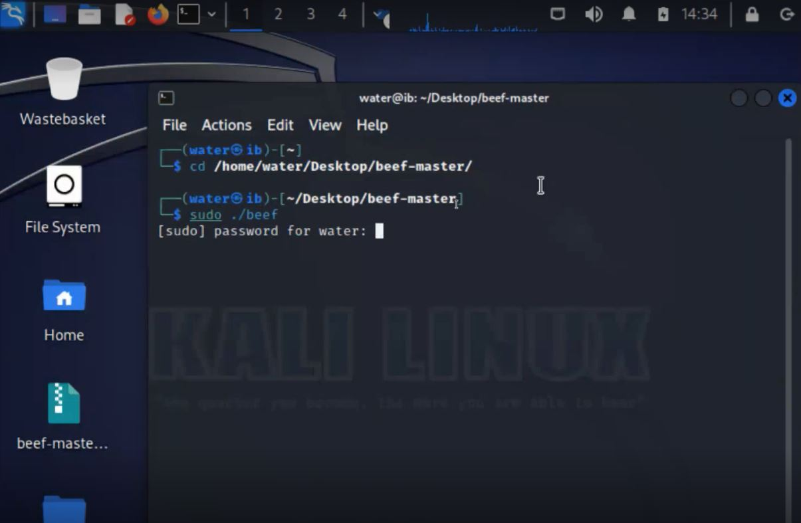
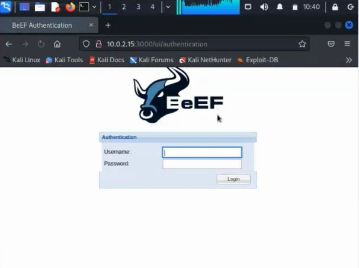

Case Study: Web Security Lab
XSS & BeEF: Browser Exploitation Framework Lab
An educational, lab-based exploration of Cross-Site Scripting (XSS) vulnerabilities and client-side exploitation using the Browser Exploitation Framework (BeEF), conducted entirely in an isolated Kali Linux virtual environment against an intentionally vulnerable practice target.
Overview
Cross-Site Scripting (XSS) is one of the most common web application vulnerabilities. It lets an attacker inject malicious JavaScript into a page that a victim's browser then trusts and executes. For this course project, our team studied how XSS is actually exploited in practice using the Browser Exploitation Framework (BeEF), an open-source penetration-testing tool purpose-built for demonstrating client-side/browser-focused attack techniques.
All testing was performed in a fully isolated lab: a Kali Linux virtual machine (VirtualBox) attacking Metasploitable, an intentionally vulnerable practice VM designed specifically for security training. No real websites, third-party systems, or production environments were involved at any point.
Lab Setup
We split the work across the team: two members handled the practical environment setup and testing, while the others focused on documentation and the presentation. Getting the lab running involved installing VirtualBox, provisioning a Kali Linux guest, and building BeEF from source along with its Ruby dependencies, troubleshooting install issues along the way using official docs and video walkthroughs.



Capabilities Explored
Once a browser is "hooked" via an injected XSS payload, BeEF's control panel exposes a range of client-side capabilities we studied and tested against our lab target:
- Hooking: injecting a JavaScript "hook" into a vulnerable page that links the victim's browser to the attacker's control panel.
- Browser control: remotely executing JavaScript and manipulating DOM elements on the hooked page.
- Command execution: running further commands against the compromised browser session.
- Browser exploitation: targeting known browser-specific vulnerabilities for deeper access.
- Social engineering demos: showing how a hooked browser could display fake login prompts or redirect users, illustrating the human-factor risk, not just the technical one.
Defensive Takeaways
Understanding how XSS is weaponized is most useful in service of preventing it. The main defensive controls that map directly to what we observed in this lab:
- Input validation & output encoding: never trust user input; encode it correctly for the context (HTML, JS, URL) before rendering it back to the page.
- Content Security Policy (CSP): restricts which scripts a browser is allowed to execute, blocking most injected/hooking payloads outright.
- HttpOnly & Secure cookie flags: prevent injected JavaScript from reading session cookies even if an XSS flaw exists.
- Framework-level protections: modern frameworks (React, Angular, etc.) auto-escape output by default, closing off a large share of classic XSS vectors.
Conclusion
This project gave our team hands-on familiarity with Kali Linux and the BeEF framework, and a much clearer picture of how deceptively powerful a single unsanitized input field can be once combined with browser-side tooling. It reinforced why XSS consistently ranks among the OWASP Top 10 web application risks, and why defense-in-depth (validation, CSP, secure cookies) matters far more than any single control.